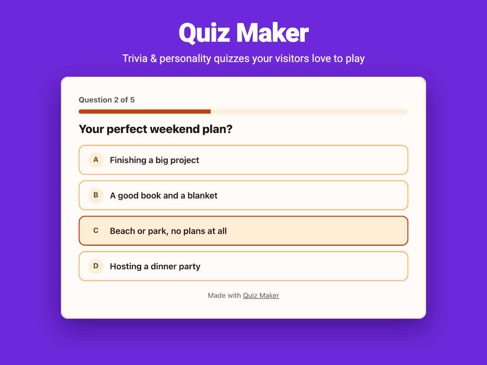
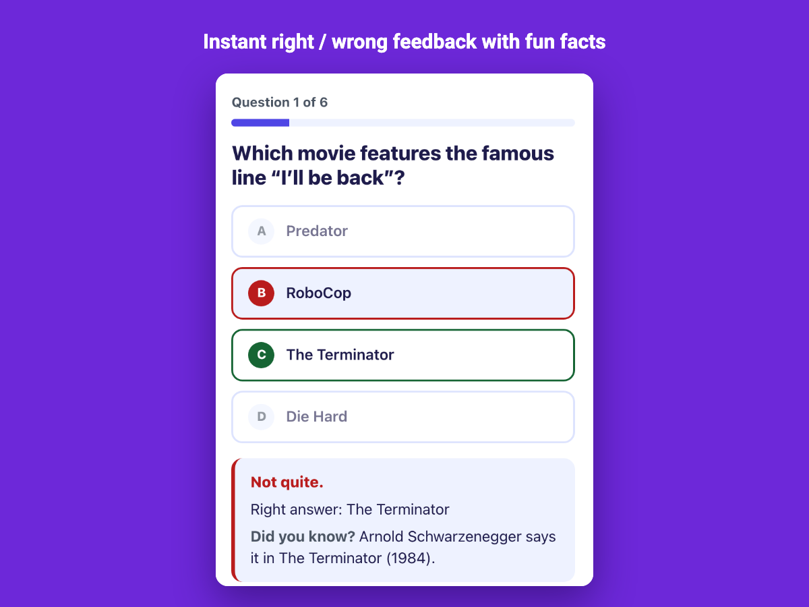

Quiz Maker for Wix
Trivia and personality quizzes that keep visitors playing, end with a shareable result and can collect email leads.

Two kinds of quiz
- Trivia: questions with right answers, instant feedback with a fun fact, a score and a result for each score band.
- Personality: answers give points to results, so every visitor finds out which one they are, with an optional button to a matching page or product.
What is included
- Eight ready-made quizzes: movie, coffee, capital-city and dog trivia; coffee, travel, workout and reader personality quizzes.
- Images from your media library, shuffled questions and answers, eight themes with light and dark versions.
- Share buttons for Facebook, X, WhatsApp and a copy link.
- An optional lead form before or after the result; leads go to the dashboard and to your Wix contacts.
- Insights: views, completions, results and the share of right answers per question.
- Every visitor-facing text can be edited, so quizzes work in any language, including right-to-left ones.

Guides
- How to add a quiz to a Wix site
- How to make a personality quiz on Wix
- How to make a trivia quiz on Wix
Questions
Do I need a paid plan?
No. The Free plan includes two live quizzes with up to ten questions each, unlimited plays and leads, all templates and themes, share buttons and Wix contacts sync. Premium adds more quizzes and questions, a question timer, CSV export, webhooks and custom colors.
Where do the leads go?
Each name and email is saved in the app dashboard with the visitor's result and added to your Wix contacts. On Premium you can export them to CSV or send them to Zapier or Make with a webhook.
Does it work on phones?
Yes. The quiz shows one question at a time, adapts to the width of the page and has large touch-friendly answers.
Quiz Maker — free plan with two live quizzes; Premium from $6.90 per month.
See it in the Wix App Market
See it in the Wix App Market